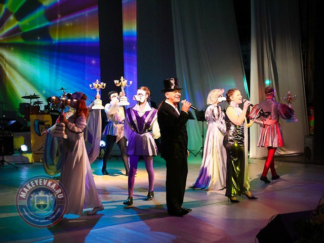
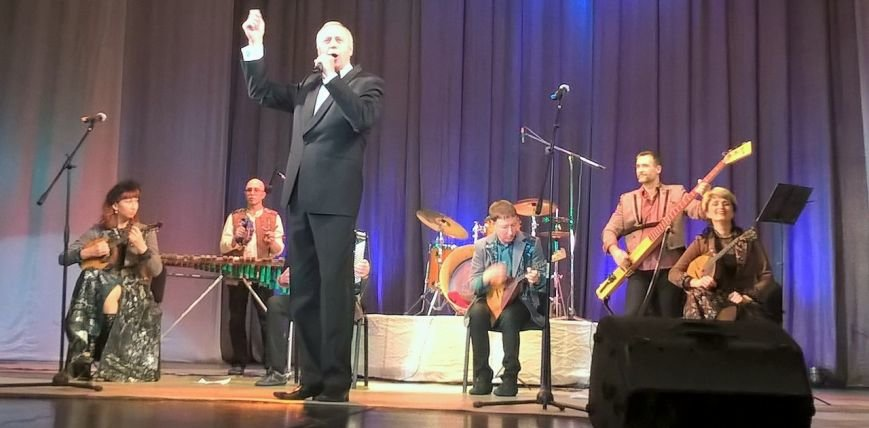

 Макеевский ТЮЗ отмечает 45-летний юбилей
4 ноября 2020 года Театр юного зрителя в Макеевке отметил красивую дату - 45-летие. Состоялся праздничный вечер, на котором были и сами виновники торжества, и почетные гости, и конечно же самые желанные посетители театра - зрители.
 В Макеевке выступили артисты из России
в Макеевском театре юного зрителя выступила творческая команда Свердловского государственного академического театра музыкальной комедии. Выступление вокалистов и музыкантов из российского Екатеринбурга собрало аншлаг.
Макеевчане стали лауреатами конкурса молодых пианистов
Воспитанники Школы искусств №2 им. А. Ханжонкова города Макеевки приняли участие в I Международном конкурсе молодых пианистов "Музыкальная академия приглашает друзей", который проходил с 18 по 21 октября в Донецкой государственной музыкальной академии им. С.С. Прокофьева.